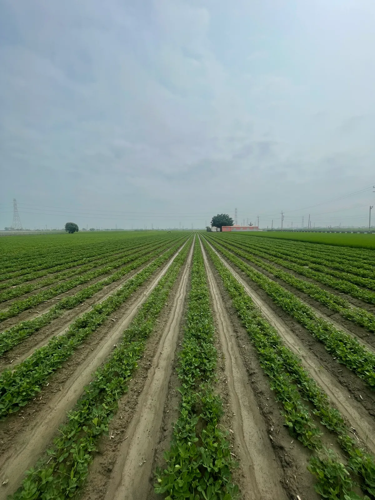

OUR STORY
品牌理念
LOCATION
雲林・元長
家中長輩長期種植花生的地方OUR BEGINNING
把熟悉的產地，做成清楚的選擇
元長是家中長輩長期種植花生的地方，也是品牌最初的起點。這份熟悉，讓我們願意更仔細地看待產地、製程與每一批花生的狀態。
比起大量、快速、只看價格，我們更在意穩定的品質與清楚的來源。一步一步把該做的細節做好，讓花生保有自然、耐吃的本味。
FROM THE LAND
一顆花生，累積每一步的風味
花生是我們熟悉的作物，也是長期接觸的農產。真正參與種植與製作之後，我們才更明白：看似日常的一顆花生，風味來自許多細節的累積。
從種植、採收、乾燥、挑選，到烘焙與包裝，每一步都會影響最後的香氣、口感與品質。我們實際參與這些環節，也慢慢整理出自己的標準。
「花生一生」想做的，是把這段從產地到餐桌的過程好好整理，讓原有風味被看見，也讓每一次品嚐都有清楚的來源。
